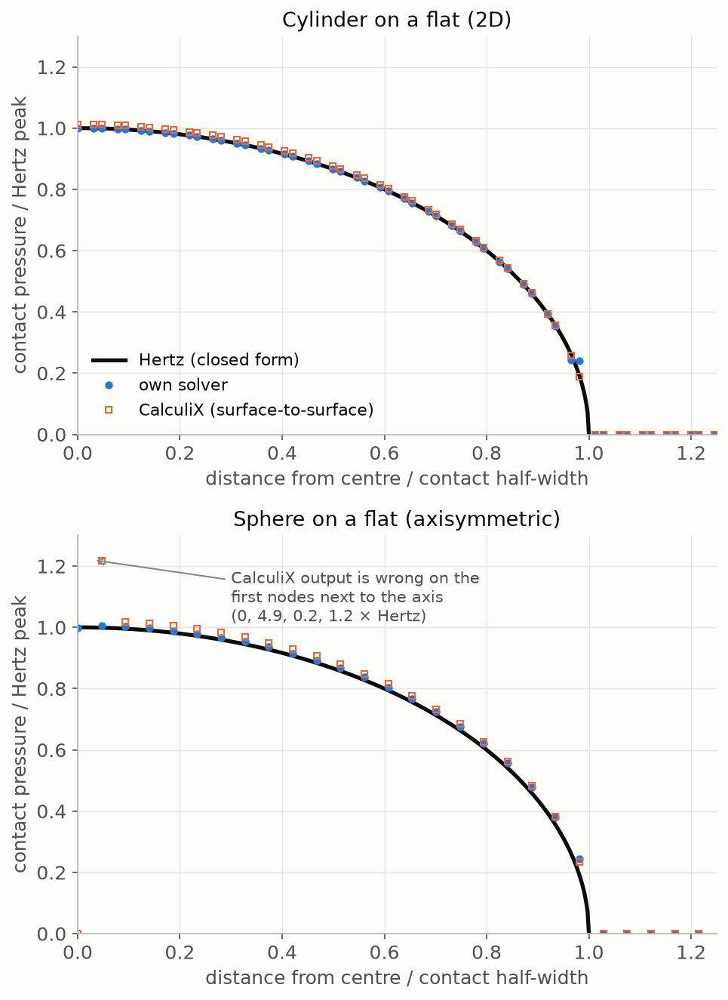
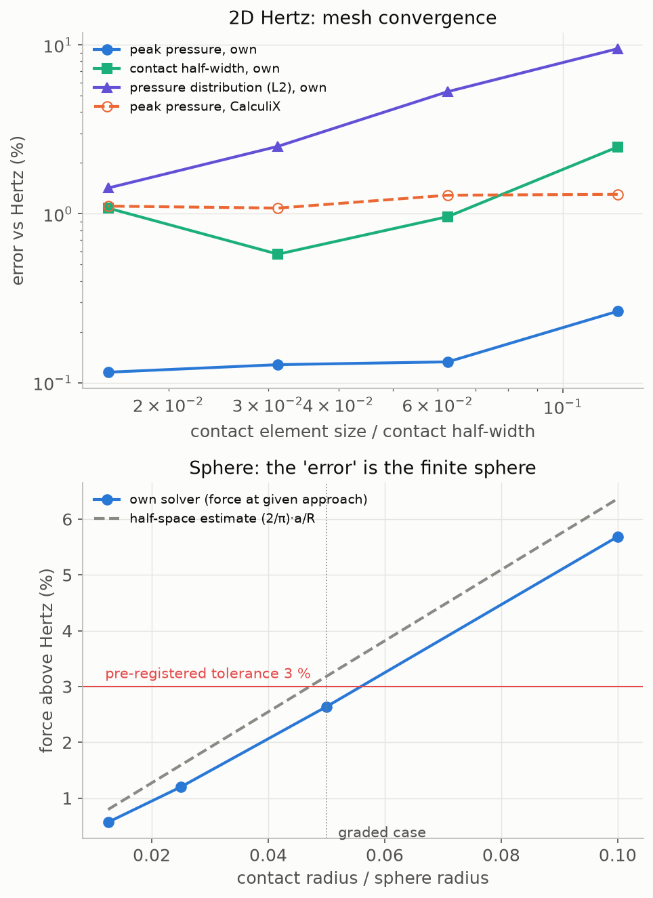
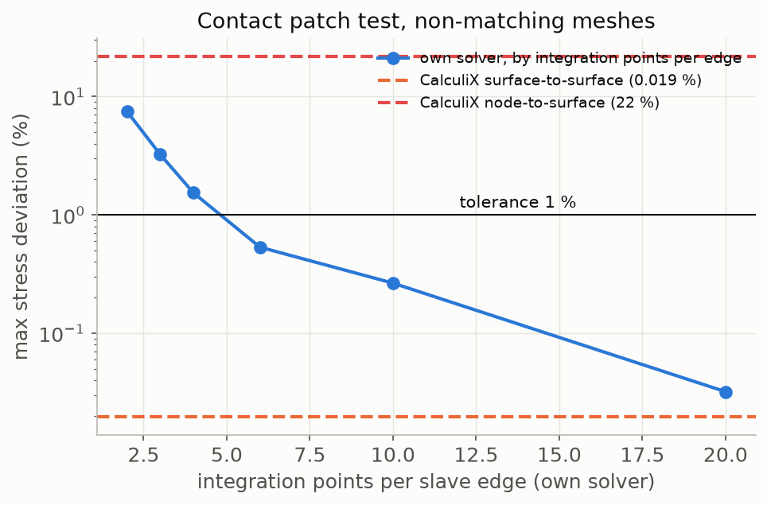
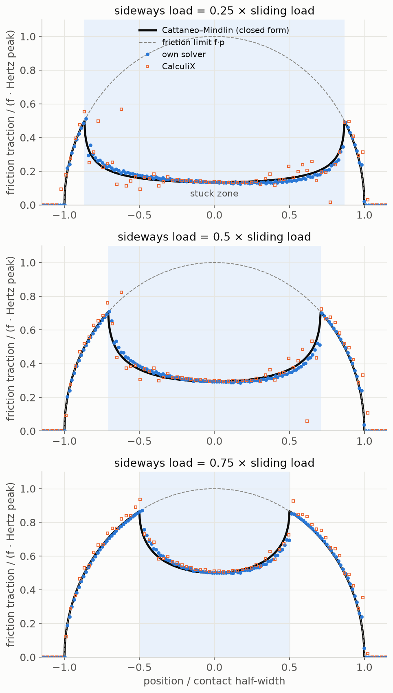
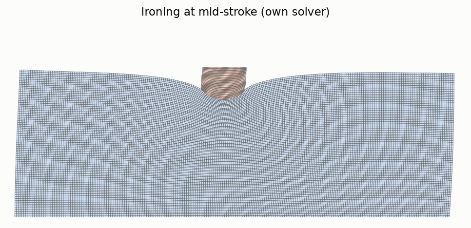
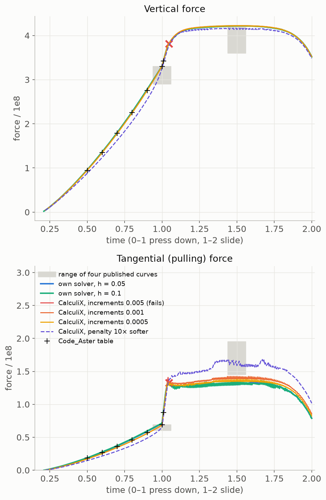
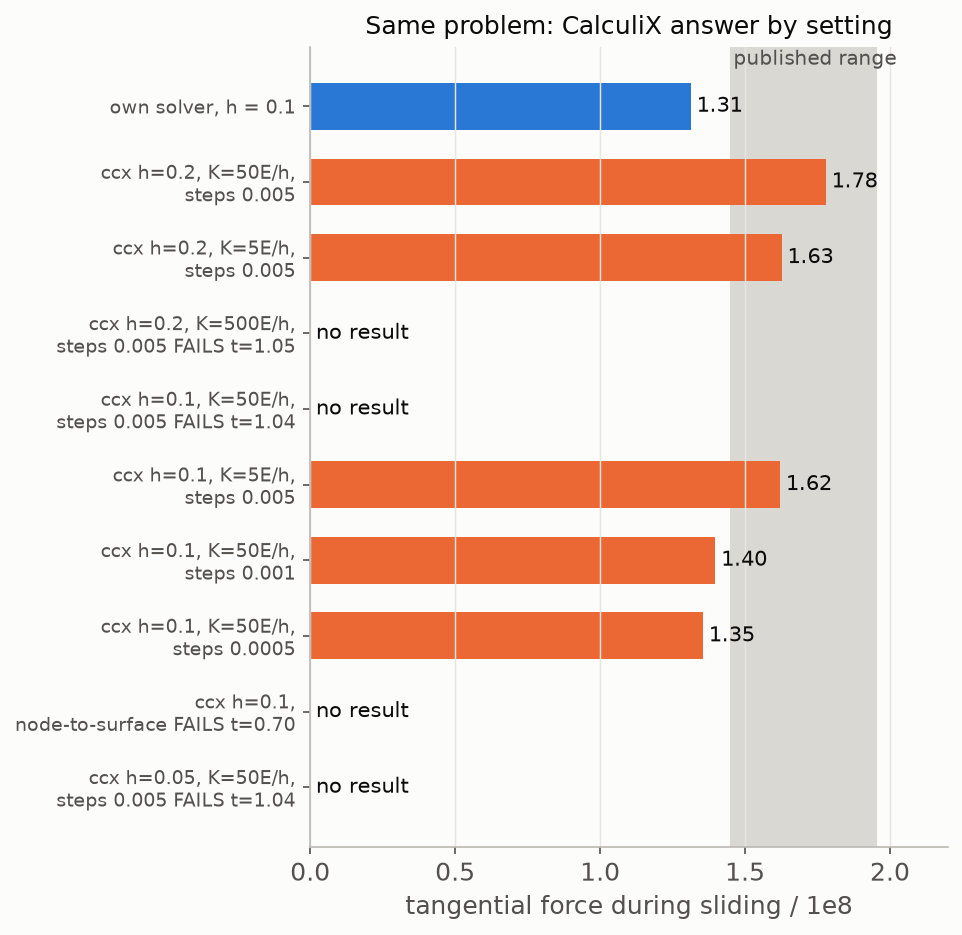
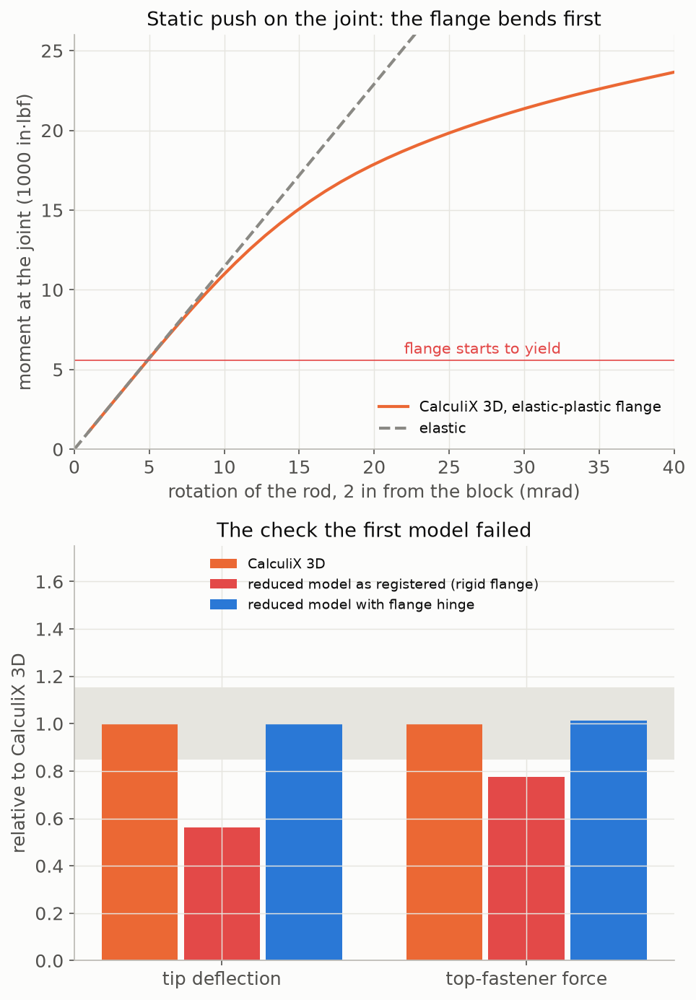
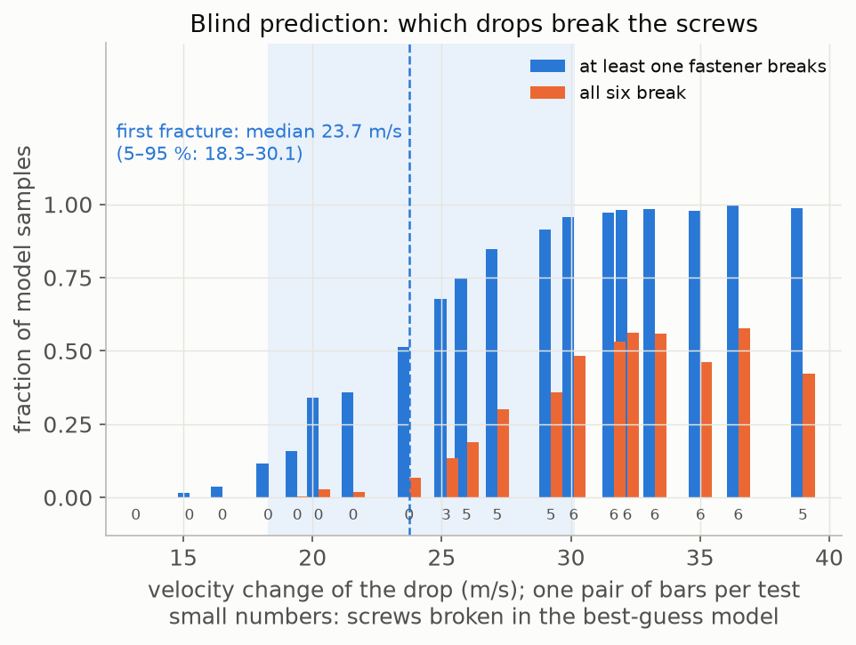
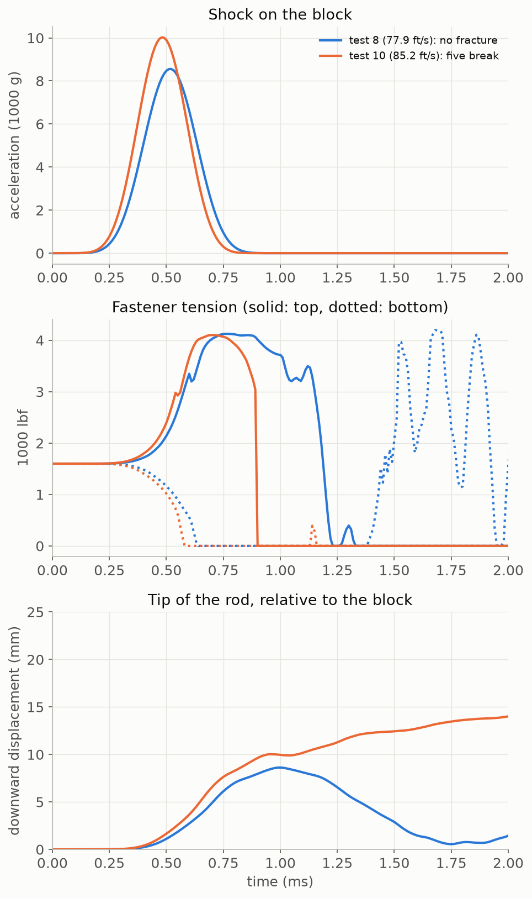

Can the agent get contact problems right — two bodies pressing and rubbing on each other — when graded against exact formulas, published results, a second solver and, at the end, a real drop test it has not seen the result of?
22 of 31 pre-registered checks passed. One blind prediction is filed and waits for grading. No tolerance was moved.
Most of the misses are CalculiX runs that failed or could not be completed, counted as misses by a rule set beforehand. The misses that belong to the agent's own solver are 2e (one force outside the published range) and, in rung 3, a self-check that showed the first model was too simple.
Contact is where structural simulation most often fails quietly. Which parts of two surfaces touch is unknown in advance, friction makes the answer depend on the loading history, and the solver has to guess and re-guess which points stick and which slide. The trial climbs three rungs:
Each problem is solved twice: with CalculiX (the open-source solver this project operates) and with a contact solver the agent wrote for this trial. Pass marks were written down before anything was run.

Pressure across the contact, from the centre to the edge. Black: the exact formula. Blue dots: own solver. Orange squares: CalculiX. Top: a cylinder pressed on a flat. Bottom: a sphere. Everything lies on the formula, except CalculiX's reported pressure on the few points next to the sphere's axis, which is wrong by a factor of up to five (most of those points are off the top of the chart).

Top: what a finer mesh buys. The error of the whole pressure curve falls steadily; the peak pressure is already within 0.3 % on the coarsest mesh; the width of the contact is only as good as the mesh spacing and does not improve steadily; CalculiX's peak pressure stays about 1 % high on every mesh. Bottom: the sphere needs 2.6 % more force than the formula says. That is not a solver error. The formula assumes the sphere is huge compared with the contact; here the contact is 5 % of the radius, and the excess shrinks in proportion as the contact gets smaller. The check passes its 3 % mark, but narrowly and for a reason the agent had not thought of when setting the mark.

The patch test: two blocks with meshes that do not line up are squeezed uniformly; the stress should be exactly uniform. CalculiX's surface-to-surface contact is exact. Its older node-to-surface contact is off by 22 %. The agent's own solver is not exact either: its error depends on how finely it integrates over the contact, 0.5 % at the setting used.
| what | computed | reference | tolerance | ||
|---|---|---|---|---|---|
| 1a-own | Patch test (two blocks, mismatched meshes, uniform squeeze): worst deviation from uniform stress — own solver | 0.53 % | 0 (exact) | 1 % | PASS |
| 1a-ccx | Same — CalculiX | 0.02 % | 0 (exact) | 1 % | PASS |
| 1b-a-own | Cylinder: half-width of the contact strip — own | 0.04946 | 0.05000 (Hertz) | 5 % | PASS |
| 1b-a-ccx | Same — CalculiX | 0.05024 | 0.05000 | 5 % | PASS |
| 1b-p0-own | Cylinder: peak pressure — own | 27.441 (-0.12 %) | 27.473 (Hertz) | 3 % | PASS |
| 1b-p0-ccx | Same — CalculiX | 27.778 (+1.11 %) | 27.473 | 3 % | PASS |
| 1b-dist-own | Cylinder: whole pressure curve, average error — own | 1.4 % | Hertz curve | 5 % | PASS |
| 1b-dist-ccx | Same — CalculiX | 1.2 % | Hertz curve | 5 % | PASS |
| 1c-F-own | Sphere: force needed for a given squeeze — own | 0.18794 (+2.6 %) | 0.18315 (Hertz) | 3 % | PASS |
| 1c-F-ccx | Same — CalculiX | 0.18789 (+2.6 %) | 0.18315 | 3 % | PASS |
| 1c-a-own | Sphere: contact radius — own | 0.05024 | 0.05000 (Hertz) | 5 % | PASS |
| 1c-a-ccx | Same — CalculiX | 0.05024 | 0.05000 | 5 % | PASS |
| 1c-p0-own | Sphere: peak pressure — own | 35.12 (+0.4 %) | 34.98 (Hertz) | 3 % | PASS |
| 1c-p0-ccx | Same — CalculiX | 54.6 (+56 %) | 34.98 | 3 % | MISS |
| 1d | Errors shrink with finer mesh, four mesh levels (own) | pressure 0.26 % → 0.12 %; sphere force 2.68 % → 2.62 % | — | finest < coarsest | PASS |
| 1e | The two solvers against each other, same mesh | pressure +1.2 %, sphere force -0.03 % | — | 2 % | PASS |
Press a cylinder onto a block, then push it sideways with less force than it takes to slide. The middle of the contact stays stuck; the edges creep. Theory (Cattaneo, Mindlin) gives the size of the stuck zone and the friction stress everywhere.

Friction stress across the contact at three sideways loads. Shaded: the stuck zone predicted by theory. Black: exact. Blue: own solver. Orange: CalculiX on a mesh twice as coarse as agreed (its run on the agreed mesh did not finish within an hour). CalculiX gets the size of the stuck zone and the centre value right to 2 %, but its friction stress scatters inside the stuck zone, and after pressing alone it already reports friction stress of up to half the limit where theory has none (own solver: 3 % of the limit).


Force on the die against time (top: vertical, bottom: pulling). Grey bars: the spread of four published solutions (they differ by up to 30 %; there is no exact answer). Crosses: tabulated Code_Aster values. A red × marks where a CalculiX run stopped.
What happened:

The same problem in CalculiX with different numerical settings. The physics is identical in every bar. Smaller steps move CalculiX towards the own solver's value.
Reading: the own solver's pulling force is converged (it changes by 1.3 % when the step is halved and by 0.5 % when the mesh is halved) and CalculiX approaches it from above as its steps shrink. It still counts as a miss against the published range, which was the mark set in advance. The whole dispute is small in physical terms: it is whether the pressure under the die leans forward by 1° or by 5°, and the four published codes disagree with each other by more than that.
| what | computed | reference | tolerance | ||
|---|---|---|---|---|---|
| 2a-own | Size of the stuck zone at three loads — own | 0.857, 0.701, 0.499 × a | 0.866, 0.707, 0.500 × a | ±0.05 a | PASS |
| 2b-own | Friction stress at the centre — own | +0.26 %, +0.20 %, +0.18 % | closed form | 5 % | PASS |
| 2c-own | Whole friction-stress curve at half the sliding load, average error — own | 5.3 % | closed form | 8 % | PASS |
| 2a-ccx | Size of the stuck zone at three loads — CalculiX | no result | 0.866, 0.707, 0.500 × a | ±0.05 a | MISS |
| 2b-ccx | Friction stress at the centre — CalculiX | no result | closed form | 5 % | MISS |
| 2c-ccx | Whole friction-stress curve at half the sliding load — CalculiX | no result | closed form | 8 % | MISS |
| 2d | Stuck-zone problem: the two solvers against each other | no CalculiX result at the agreed mesh | — | 5 % | MISS |
| 2e-own | Ironing: four forces inside the range of published curves — own (×1e8; end of pressing / mid-slide) | vertical 3.31 / 4.21, pulling 0.71 / 1.31 | vertical 2.85–3.35 / 3.55–4.23, pulling 0.55–0.74 / 1.40–2.00 | inside | MISS |
| 2e-ccx | Same — CalculiX in the agreed setting | run fails 4 % into the slide | same ranges | inside | MISS |
| 2f | Ironing: the two solvers against each other | no CalculiX result in the agreed setting | — | 5 % | MISS |
| 2g | Ironing, own solver: change when the step is halved / the mesh is halved | step: 1.3 %; mesh 0.1→0.05: 0.6 %; mesh 0.2→0.1: 4.4 % | — | 3 % | PASS |
Sandia National Laboratories dropped a block with a 1.5 lb aluminium rod bolted to its side (six small steel screws through a flange) onto a hard stop, in 19 documented tests of increasing speed. The shock throws the rod downward; at some speed the screws break. Teams were asked to predict, without seeing the result, the lowest speed that breaks one screw, the lowest that breaks all six, and how the parts move.
What the agent had: the public information packet (a PDF). The data files behind it need a login that is not available here, so the screw strength curves were read off the packet's figures and the shock pulses were rebuilt from three numbers per test. What it did not have: any result. The results report exists; it was not opened.
Model: not a full 3D crash simulation but a small dynamic model: the rod as a beam, the six screws as springs that stretch, yield and snap, the flange pressing and sliding on the block with friction. CalculiX 3D models were used to check and correct it.

Bottom: the check the first version of the model failed. It treated the flange as rigid and came out 44 % too stiff. Top: a CalculiX 3D push on the joint shows why — the thin flange bends, and starts to bend permanently at a quarter of the load of the mildest test. The model was rebuilt with a bending flange before the prediction was frozen. That one change moved the predicted breaking speed up by about a quarter (median 19.4 → 23.7 m/s).

The frozen prediction. Blue: share of 400 model variants (screw strength, friction, hole clearance and other unknowns varied over plausible ranges) in which at least one screw breaks in that test. Orange: all six break. Numbers under the bars: screws broken in the single best-guess model.

Two neighbouring tests in the best-guess model, one that survives and one that does not.
Also predicted, although not asked for: the flange is bent permanently in every test, including the mildest. Not predicted by the model (answered by judgment only): no cracks in the block or in the rod.
| what | result | tolerance | ||
|---|---|---|---|---|
| 3a | Vibration frequency of the rod, small model vs CalculiX 3D | 1145 vs 1195 Hz (-4.3 %) | 5 % | PASS |
| 3b | Static joint response, small model as first written vs CalculiX 3D | tip deflection -44 %, top-screw force -22.5 %; after rebuilding: +0.2 %, +1.3 % | 15 % | MISS |
| 3c | Energy bookkeeping of the time stepping | 0.03 % unaccounted | 2 % | PASS |
| 3d | Halving the time step | 0.06 % change | 2 % | PASS |
| test | velocity change | peak | broken, best guess (order) | chance any | chance all six |
|---|---|---|---|---|---|
| 1 | 13.2 m/s (43.2 ft/s) | 5151 g | 0 | 0 % | 0 % |
| 2 | 15.2 m/s (50.0 ft/s) | 5995 g | 0 | 2 % | 0 % |
| 3 | 16.5 m/s (54.2 ft/s) | 6312 g | 0 | 4 % | 0 % |
| 4 | 18.3 m/s (60.0 ft/s) | 7388 g | 0 | 12 % | 0 % |
| 5 | 19.4 m/s (63.7 ft/s) | 7449 g | 0 | 16 % | 0 % |
| 6 | 20.2 m/s (66.4 ft/s) | 9209 g | 0 | 34 % | 3 % |
| 7 | 21.6 m/s (70.8 ft/s) | 8634 g | 0 | 36 % | 2 % |
| 8 | 23.7 m/s (77.9 ft/s) | 8562 g | 0 | 52 % | 7 % |
| 9 | 25.2 m/s (82.6 ft/s) | 9567 g | 3 (1, 2, 6) | 68 % | 14 % |
| 10 | 26.0 m/s (85.2 ft/s) | 10030 g | 5 (1, 2, 6, 3, 5) | 75 % | 19 % |
| 11 | 27.2 m/s (89.1 ft/s) | 10858 g | 5 (1, 2, 6, 3, 5) | 85 % | 30 % |
| 12 | 29.2 m/s (95.9 ft/s) | 10670 g | 5 (1, 2, 6, 3, 5) | 92 % | 36 % |
| 13 | 30.1 m/s (98.8 ft/s) | 11924 g | 6 (1, 2, 6, 3, 5, 4) | 96 % | 48 % |
| 14 | 31.7 m/s (103.9 ft/s) | 11692 g | 6 (1, 2, 6, 3, 5, 4) | 97 % | 53 % |
| 15 | 32.2 m/s (105.6 ft/s) | 11860 g | 6 (1, 2, 6, 3, 5, 4) | 98 % | 56 % |
| 16 | 33.3 m/s (109.1 ft/s) | 11578 g | 6 (1, 2, 6, 3, 5, 4) | 98 % | 56 % |
| 17 | 35.0 m/s (114.9 ft/s) | 10080 g | 6 (1, 2, 6, 3, 5, 4) | 98 % | 46 % |
| 18 | 36.5 m/s (119.7 ft/s) | 11114 g | 6 (1, 2, 6, 3, 5, 4) | 100 % | 58 % |
| 19 | 39.0 m/s (127.9 ft/s) | 8774 g | 5 (1, 2, 6, 3, 5) | 99 % | 42 % |
| Hertz contact | The exact solution (from the 1880s) for two smooth elastic bodies pressed together: size of the contact patch, peak pressure and pressure distribution. |
| Patch test | A sanity test: squeeze two flat blocks uniformly; any contact method worth using should return exactly uniform stress. |
| Stick / slip | Under friction, touching points either move together (stick) or slide with a friction force proportional to pressure (slip). |
| Cattaneo–Mindlin | The exact solution for a contact pushed sideways below the sliding load: a stuck centre with creeping edges. |
| Ironing | A standard hard test for contact software: a stiff die pressed into a soft slab and dragged along it. |
| Penalty stiffness | A numerical spring that pushes overlapping surfaces apart. Too soft and the surfaces overlap; too stiff and the solver struggles. |
| Surface-to-surface / node-to-surface | Two ways of deciding where contact forces act: averaged over patches of surface (newer, smoother) or at single mesh points (older). |
| Blind prediction | A prediction written down and frozen before the experimental result is looked at. |
| Velocity change | How much speed the falling carriage loses in the impact; the measure of how severe each drop test is. |
| Flange | The flat rim at the end of the rod through which the six screws pass. |
Experiment folder: experiments/2026-11-15-contact-ladder/ — pass marks in PREREGISTRATION.md, chronology including dead ends in log.md, frozen prediction in results/prediction.json.